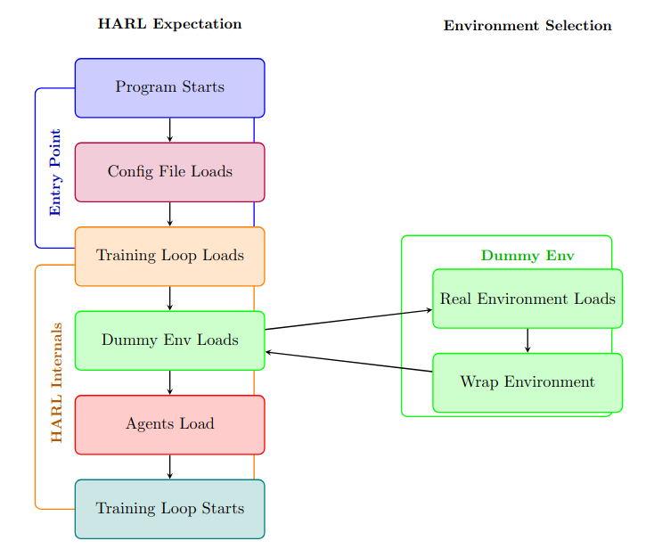

The problem
Robot teams are rarely made of identical robots. A search team might pair a quadruped with a wheeled scout, and a warehouse might mix arms with mobile bases. Training them together with reinforcement learning needs two things at once: fast, physically realistic simulation, and multi-agent algorithms that work when agents have different bodies, observations, and actions.
NVIDIA Isaac Lab had the first: GPU-parallel physics that can run thousands of environments at once. But its multi-agent support was thin. It shipped only MAPPO and IPPO, and only one multi-agent environment. MAPPO works best when agents share one policy, which assumes they are interchangeable. IPPO trains each agent independently, so no agent's critic sees the whole team.
What I built
I extended Isaac Lab with the algorithms from the Heterogeneous-Agent Reinforcement Learning (HARL) library: HAPPO, HATRPO, and HAA2C, alongside MAPPO with and without parameter sharing. These algorithms update agents one at a time, each accounting for the updates of the agents before it, which suits teams of agents with different bodies and roles.
The two libraries were not designed to fit together. HARL expected to build its own simple environments, and its data structures didn't match Isaac Lab's GPU tensors. I kept HARL's training loop largely intact and did the work around it:
- Rerouted environment loading so HARL starts from a placeholder that loads and wraps the real Isaac Lab environment.
- Converted data between the two libraries at several points in each training step so they could communicate.
- Rewrote parts of the training loop for performance, to keep up with Isaac Lab's GPU-accelerated simulation, and improved logging and checkpoint saving.

Environments
Together with my co-authors Christopher Allred and Isaac Peterson, we added multi-agent environments that mix robot types, including quadrupeds, humanoids, and wheeled robots. The paper evaluates MAPPO and HAPPO on six of these tasks.
Results
The paper shows that heterogeneous multi-agent training runs in Isaac Lab without giving up its scale and speed. My master's thesis takes the comparison further: on a quadruped split into cooperating agents, HAPPO learns a better-coordinated gait than MAPPO, with throughput within 1% of it.
What happened next
The framework became the base for the lab's follow-up work on adversarial teams, where heterogeneous robots compete in tasks like soccer and sumo (Peterson et al., 2025).